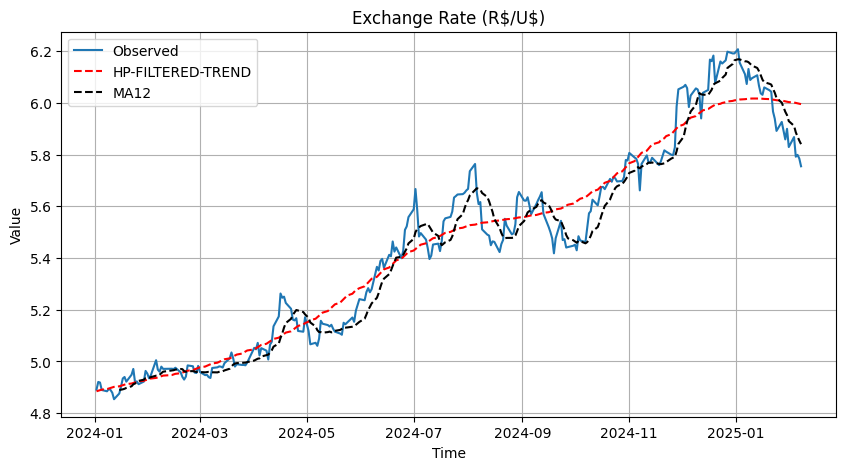

Forecasting the Exchange Rate
Buy now or latter?
Have you ever wondered if you should buy dollars this month or closer to your trip?
This is a common question for those willing to travel abroad but are unsure whether to buy now or closer to the trip. I have myself questioned that and believe me, a few friends too.The exchange rate can often feel unpredictable, especially in developing economies like Brazil. Here, it tends to be quite high and may experience structural breaks. It is also influenced by external dynamics that aren't always tied to local issues. Can we predict what will the ER be like next month? Higher, lower?
This post aims to answer this question:
How good are statistical models at inferring the Brazilian Real to US Dollar ratio?Time series, especially financial ones, are often predicted by market players. The workhorse of econometrics - the art of modeling the economy - is the so-called Ordinary Least Squares method.
Among the assumptions, this method requires that the errors of your estimate be normally distributed around 0 and constant variance. If not, then you might have biased or at least inconsistent parameters, and likely misleading confidence intervals and p-values.
Why garch?
In most financial time series, including the exchange, these assumptions are not met: that is, their estimated residuals are not constant, nor present constant variance.
So why not estimate the residuals itself?
This is where the GARCH model comes in. Its basic assumption is that variance is conditional to time. So the variance of the exchange rate today is based on the exchange past variance values and past error.
Think of this: if a variation is time dependent then yesterday’s variance is probably affecting today’s variance. Maybe the variance of the exchange rate two days ago also is still reflected on todays variation.
The GARCH model is basically estimating the weight of past variances and error terms on current variance. Hence we can define the variance today as \( r_t \) as a constant mean \( \mu \) plus a time-dependent error term \( \epsilon_t \):
\[ r_t = \mu + \epsilon_t \]
This error, however, is not constant; it is conditional on time and its previous values such that:
\[ \epsilon_t = \sigma_t z_t, \quad z_t \sim \text{i.i.d. }(0,1) \]
And most importantly, this \( \sigma_t \) - the variance itself - is defined as:
\[ \sigma_t^2 = \omega + \sum_{i=1}^{p} \alpha_i \epsilon_{t-i}^2 + \sum_{j=1}^{q} \beta_j \sigma_{t-j}^2 \]
The weights on this equation are, naturally, the \( \alpha_i \) and \( \beta_j \). Whereas \( \omega \) is a constant intercept
Let’s fit it to the data?
For this post, I have used the Brazilian Real to US Dollar exchange rate. The data is available at the Central Bank of Brazil website. The data is daily and spans from 2024-01-01 until the last available data (2025-01-07) .
Since the ER was clearly non stationary AND we are not estimating its level but its variance, we will use the difference daily difference as our estimand \( r_t \).